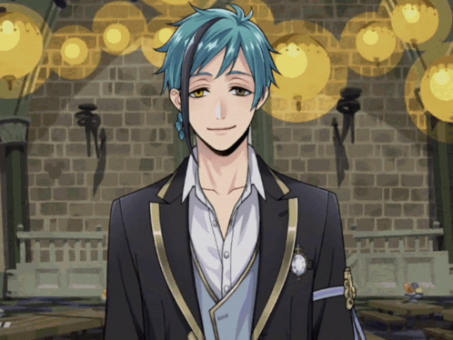

welcome to my garden!
Hi!! I'm Rose and this is my personal website. Some stuff is still in development so ill continue to update! Explore around through the nav and especially the themes, that's my favorite part. Have funn! :D
Add me!
Comment in the guestbook if you did or dm me that you're from neocities :p
Discord: rose_eatsgachagames
Insta: notrllyrose_
Tiktok: (i make edits O.o)
Genshin:
Honkai Star Rail:
Zenless Zone Zero:
Cookie Run Kingdom:
Infinity Nikki:
Twisted Wonderland:
test
Themes!
Click any picture to change the color :3
(WIPP)
Music Player
Also changes with the themes :0...orr u can change it urself if ur that impatient smh ( ｡ •̀ ᴖ •́ ｡) ↑
Webcam

this is who your talking to btw
Update Log
started working on 3/_/26